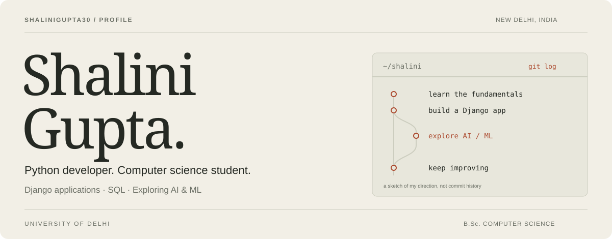
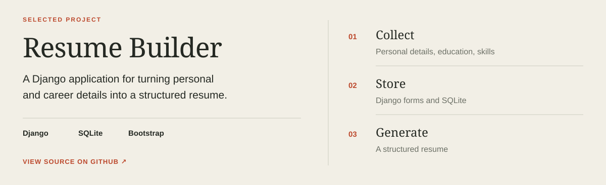

Email ↗ · LinkedIn ↗ · Repositories ↗
Hi, I'm Shalini.
I'm a Computer Science undergraduate at the University of Delhi, working with Python, Django, and SQL. I built a full-stack resume generator and completed AI industrial training at InternVision in 2025.
I'm interested in taking a useful idea from a form and database to an application someone can use—and eventually adding well-tested machine learning features.
| Built Django Resume Builder Python · Django · SQLite · Bootstrap |
Exploring next Applied ML & text matching Learning goals and future project ideas |
Selected project

Browse the code ↗ · Commit history
Dynamic forms collect personal details, education, skills, and experience. SQLite stores the information, while HTML, CSS, and Bootstrap provide a responsive interface for generating structured resumes.
The graphic illustrates the workflow, not an application screenshot.
Languages & tools


Programming: Python, C++, C, SQL
Web & databases: Django, HTML, CSS, Bootstrap, MySQL, SQLite
Tools: Git, VS Code, Linux, Windows
Foundations: Data structures & algorithms, OOP, DBMS, operating systems
On GitHub
All repositories · Contribution history · This profile's source
Stats reflect GitHub activity, not skill level. The card is provided by GitHub Readme Stats and may be cached.
Learning & next ideas
After Artificial Intelligence Industrial Training — InternVision, 2025, I'd like to explore data preparation, model evaluation, and natural language processing.
Next project idea: extend my resume builder with resume-to-job-description matching. Compare keyword and semantic approaches, show supporting evidence, and explain the gaps.
Planned tools: NumPy, pandas, scikit-learn, and text embeddings. This is a learning roadmap; the AI extension isn't implemented yet.
Beyond code — competitions, leadership & volunteering
- Finalist: Internal Smart India Hackathon 2025, ENIAC Society, Department of Computer Science.
- Campus Ambassador: AICTE MSME Initiative.
- Student volunteer: 12-Week Computer Literacy Programme, Department of Computer Science.
- Events & design: Code Quest volunteer; Graphic Team volunteer, Tech Melange 2024.
- Volleyball: 1st place, Inter-Departmental Tournament 2025, representing Computer Science.
Education & training
B.Sc. Computer Science — University of Delhi, 2023–2026
- Artificial Intelligence Industrial Training — InternVision, 2025
- From Zero to SDE Pro: DSA & System Design — GUVI × HCL
- SQL for Analyst Certification
- Splunk Ignite Program
- Network Ninja Bootcamp
Have a project or opportunity in mind?
guptashalini.554433@gmail.com · Connect on LinkedIn
Icons by Devicon · Statistics by GitHub Readme Stats